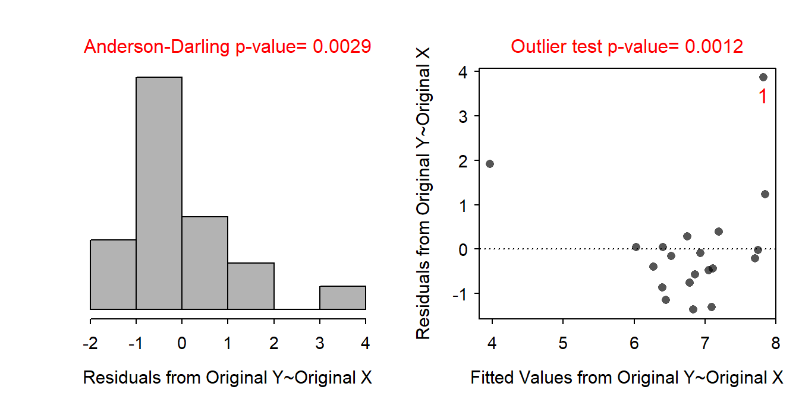
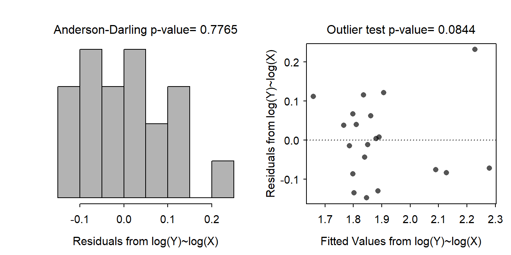
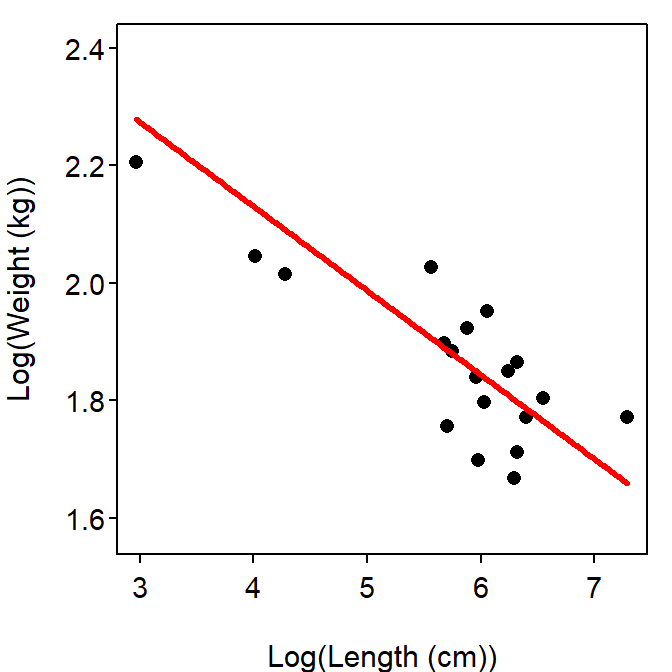

It is difficult to ultimately assess independence with the amount of information given. However, under the assumption that all Rattlesnakes were unique (no snake was measured twice) then it seems that the data are at least roughly independent. There is evidence for a strong non-linearity and heteroscedasticity (Figure 1-Right), the residuals do not appear to be normal (Anderson Darling p=0.0029) and are right-skewed (Figure 1-Left), and significant outliers are evident (outlier test p=0.0012). A transformation will be explored to see if the assumptions can be met.
The authors suggested that the relationship would be exponential but logging just the peak frequency of the rattle variable did not result in meeting all of the assumptions. However, when both variables were log-transformed there is no visual evidence for non-linearity (Figure 1-Right), the residuals appear roughly homoscedastic (Figure 1-Right) and approximately normal (Anderson-Darling p=0.7765; Figure 1-Left), and there is no evidence for significant outliers (outlier test p=0.0844). Thus, the assumptions appear to be adequately met on the log-log scale.
There is a signficant relationship between log peak frequency of the rattle and log weight of Rattlesnakes (p<0.00005; Table 1; Figure 3).
Specifically, as the log weight of the Rattlesnakes increases by one unit, the average log peak frequency of the rattle decreases between 0.099 and 0.188 units. On the original scale, as the weight of the Rattlesnake increases by a multiple of 2.72 cm, the average peak frequency of the rattle changes (decreases) by a multiple of between 0.829 and 0.906.
The predicted mean peak frequency for all 454 g Rattlesnake is between 5.93 and 6.59 kg.

Figure 1: Histogram of residuals (left) and residual plot (right) for regression of peak frequency of rattles on weight of Rattlesnakes.

Figure 2: Histogram of residuals (left) and residual plot (right) for regression of log-transformed peak frequency of rattles on log-transformed weight of Rattlesnakes.

Figure 3: ANOVA table for the linear regression of log-transformed peak frequency of rattles on log-transformed weight of Rattlesnakes.
Table 1: ANOVA table for the linear regression of log-transformed peak frequency of rattles on log-transformed weight of Rattlesnakes.
Df Sum Sq Mean Sq F value Pr(>F)
weight 1 13.706 13.7061 8.9647 0.007785
Residuals 18 27.520 1.5289 R Appendix.
rdf <- read.csv("Rattlesnakes.csv")
lm1 <- lm(freq~weight,data=rdf)
transChooser(lm1)
rdf$logw <- log(rdf$weight)
rdf$logf <- log(rdf$freq)
lm2 <- lm(logf~logw,data=rdf)
anova(lm2)
summary(lm2)
confint(lm2)
p.logf <- predict(lm2,data.frame(logw=log(454)),interval="confidence")
exp(p.logf)*exp(anova(lm2)[2,3]/2)